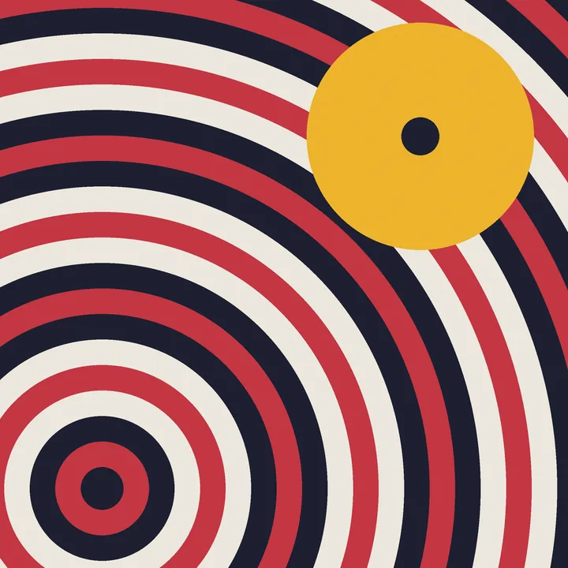

Sua coleção de discos, sempre à mão.
Cadastre vinis, CDs e fitas buscando capa e ficha técnica no iTunes. No garimpo, abra pelo celular e confira se aquele disco já está na sua estante.

Na estante
Você tem 10 discos: 6 vinis, 3 CDs e 1 fita.


Com os amigos
Discos emprestados que ainda não voltaram. Os atrasados aparecem em vermelho.
Gerenciar empréstimos- Kind of Blue está com Rafael Souza devolve em 30/11/2026
- Elis & Tom está com Ana Paula Lima devolve em 15/11/2026